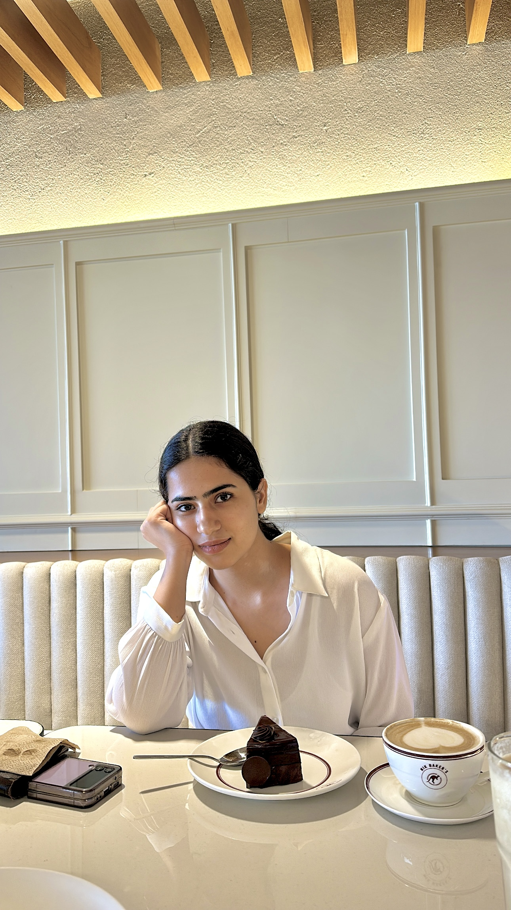

Bachelor of Commerce (Honours)
Shri Guru Tegh Bahadur Khalsa College, University of Delhi
Currently in second year

Student | ASPIRING DIGITAL MARKETER
Email: prabhnoorsandhu08@gmail.com | Phone: +91 9988130498
Second-year B.Com (Hons) student at Shri Guru Tegh Bahadur Khalsa college, University of Delhi, with a foundation in accounting and finance. Looking for opportunities where I can contribute, learn, and gain hands-on experience in Content making , Event management , Digital and Social media marketing , Corporate finance, Audit, or Business operations.
Shri Guru Tegh Bahadur Khalsa College, University of Delhi
Currently in second year
Little Flower Convent School, Sri Muktsar Sahib
Graduated in 2025 (93%)
Little Flower Convent School, Sri Muktsar Sahib
Graduated in 2023 (95%)
Sri Ram College of Commerce, University of Delhi
Graduated in 2026(passed with distinction)
St. Stephens College, University of Delhi
Expected completion in 2027
TEDXSGTBKC | OCT 2026 – currently pursuing
DEBATTLE MSCW | APRIL 2026 – OCT 2026
Mentor Me | NOV 2025 – JUNE 2026